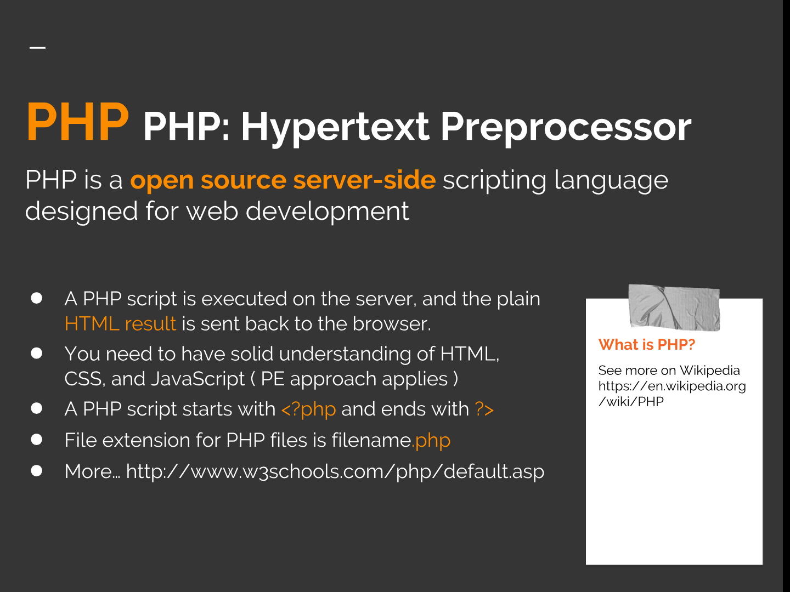

1.1. Javascript vs. PHP highlights.
Javascript vs. PHP
- Familiarize yourself with the PHP language.
- What is PHP? Why is it suitable for web development? What is the current version? …php.net (primary source)
- A Simple Tutorial
- Complete the tutorial: What do I need? Your first PHP-enabled page. Something Useful. Dealing with Forms. Using old code with new versions of PHP. What's next? …php.net
- PHP 7 Introduction
- What You Should Already Know. What is PHP? What is a PHP File? What Can PHP Do? Why PHP? What's new in PHP 7 …on w3schools.com
- PHP 7 Syntax
- Basic PHP Syntax. Comments in PHP. PHP Case Sensitivity. …on w3schools.com
- PHP 7 Variables
- Creating (Declaring) PHP Variables. PHP Variables. Output Variables. PHP is a Loosely Typed Language. PHP Variables Scope. Global and Local Scope. PHP The global Keyword. PHP The static Keyword. …on w3schools.com
- PHP 7 echo and print Statements
- PHP echo and print Statements. The PHP echo Statement. The PHP print Statement. …on w3schools.com
1.2. Dataflow
What distinguishes PHP from something like client-side JavaScript is that the code is executed on the server, generating HTML which is then sent to the client. The client would receive the results of running that script, but would not know what the underlying code was.
- How do you get data from HTML page to PHP?
- How do you get data from PHP to HTML page?
- Can you get data from HTML and Javascript to a database directly?
- What is the difference between
$_POSTand$_GET?

1.3. Basic Rules of PHP Programs
PHP interpreter parses a file, it looks for opening and closing tags, which are <?php to open and ?> to close a PHP section.
Everything outside of a pair of opening and closing tags is ignored by the PHP parser which allows PHP files to have mixed content (hybrid).
PHP also allows for short open tag <? which is discouraged since it is only available if enabled and conflicts with other XML tags.
<?= $someVar ?>
is available shortcut for
<?php echo $someVar ?>
Unlike most other programming languages, PHP was created from the ground up for generating web pages. This means that common web programming tasks, such as accessing form submissions and talking to a database, are often easier in PHP. PHP comes with the capability to format HTML, manipulate dates and times, and manage web cookies — tasks that are often available only as add-on libraries in other programming languages.
On most servers, the default extension for PHP files is .php. If the server supports PHP, then you do not need to do anything. Files created with the .php extension located in the web directory will be automatically parsed by the server:
http://userid.dev.fast.sheridanc.on.ca/file.php
where the web directory is /home/userid/public_html
Organizing scripts: Pure PHP and Hybrid PHP.
(example two.php)
1.4. Whitespace and Case-sensitivity
PHP programs consist of a series of statements, each of which ends with a semicolon. You can put multiple statements on the same line as long as they are separated with a semicolon. You can put as many blank lines between statements as you want. The PHP interpreter ignores them. Whitespace includes space, tab, and newline characters.
In practice, it is good style to put one statement on a line and put blank lines to improve the readability of your source code. Use the same conventions as Javascript code.
The PHP interpreter does not care whether you use uppercase letters, lowercase letters, or both when you include keywords and function names in your program.
1.5. Commenting and Documentation
Review Writing Code: standards and conventions in Tutorial Set 1.
Writing code is similar to academic writing in that when you use or adapt code developed by someone else as part of your project, you must cite your source. However, instead of quoting or paraphrasing a source, you include an inline comment in the code. These comments not only ensure you are giving proper credit, but help with code understanding and debugging.
Academic Integrity at MIT, A Handbook for Students
2.1. Simple Statements
Simple Statements, Selection (decisions), Iteration (loops), Requires and Includes
PHP requires instructions to be terminated with a semicolon at the end of each statement. The closing tag of a block of PHP code automatically implies a semicolon;
Simple statements— each PHP statement is an instruction to PHP interpreter to do something. Statements are interpretted one at a time, in the sequence they are written. statement1; statement2; statement3; Sometimes statements are combined into a block and executed together (decisions and iteration).
2.2. Selection (Decisions)
The if statement allows for conditional execution of code fragments.
PHP features an if structure that is similar to that of C (Java and Javascript).
if (condition) {
echo "code to be executed "
."if condition is true";
} else {
echo "code to be executed "
."if condition is false";
}
if control structure @ .net manual
The switch statement is similar to a series of IF statements on the same expression.
Dig Deeper!
switch (n) {
case label1:
// code to be executed
// if n=label1;
break;
case label2:
...
default:
// code to be executed
// if n is different
// from all labels;
}
switch control structure @ .net manual
2.3. Iterations (Loops)
The for loop
for (initialization;
condition;
finalExpression) {
//code to be executed;
}
for control structure @ .net manual
The foreach construct works only on arrays, and is used to loop through each key/value pair in an array.
foreach (arrayVariable
as currentMemberValue) {
//code to be executed;
}
foreach control structure @ .net manual
The while statement
initialization;
while (condition) {
// code to be executed;
finalExpression;
}
while control structure @ .net manual
The do…while construct executes the code once, and then repeats the loop as long as the specified condition is true. the truth expression is checked at the end of each iteration
do {
code to be executed;
} while (condition is true);
do-while control structures @ .net manual
2.4. Requires and Includes
PHP has four functions for using external files: include(), include_once(), require(), and require_once().
Include files give you a way to create one version of the common elements of your web site, such as the header, footer, menu, etc., which you then reference on all web pages. The main difference between include() and require()
- include() function will print a warning on error but will continue to process the script.
- require() function will print an error and halt the processing of the script.
- otherwise, both functions work exactly the same when script is working properly.
- Both functions also have a _once version. This ensures that the external file is only included once regardless of how many times the script may inadvertently try to include it.
requireis identical toincludeexcept upon failure it will also produce a fatal E_COMPILE_ERROR level errorrequire_onceandinclude_oncewill check if the file has already been included, and if so, not include (require) it again.
include control structures @ .net manual
2.5. More Control Structures
break, continue, return, else if, elseif, …
control structures @ .net manual
2.6. Expressions
Expressions are the most important building blocks of PHP. In PHP, almost anything you write is an expression... "anything that has a value". The most basic forms of expressions are constants and variables. Slightly more complex examples for expressions are functions and the ternary conditional operator.
What are expressions? @3.1. PHP Operators
An operator is something that takes one or more values (or expressions, in programming jargon) and yields another value (so that the construction itself becomes an expression).
- Assignment operators —
- Arithmetic operators — Addition, Subtraction, Multiplication, Division, Modulus, Exponentiation;
- Array operators — Union, Equality, Identity, Inequality, Non-identity;
- String operators — Concatenation;
- Logical operators — And, Or, Xor, And, Or, Not;
- Increment/Decrement operators — Pre-increment, Post-increment, Pre-decrement, Post-decrement;
- Comparison operators — Equal, Identical, Not equal, Not identical, Greater than, Less than, …
- Ternary conditional operator — If the value of the first sub-expression is TRUE (non-zero), then the second sub-expression is evaluated, and that is the result of the conditional expression. Otherwise, the third sub-expression is evaluated, and that is the value.
$first ? $second : $third ;
3.2. Operator precedence
Examine the operator precedence on php.net documentation and compare to Java and Javascript.

4.1. PHP data types
Data Types, Identifiers, Constants, Variable Scope, Declaring Variables
- integer (whole number)
- float (numeric value with decimial digits)
- string (a sequence of characters)
- Boolean (true or false)
- NULL (no value)
- Array (indexed multiple values)
- Object (structure created with a class)
- Resource (a reference that identifies a connection) Read more.
A resource is a special variable, holding a reference to an external resource, special handles to opened files, database connections, image canvas areas… Resources are created and used by special functions.
4.2. Identifiers and Constants
Dig Deeper!
All variable names have a dollar sign in front; variable names must begin with a letter or an underscore (cannot begin with a number; can be any length; can include letters, numbers, and underscores only; case sensitive.
Single quotes variable name is displayed by its name;
Double quotes variable name is replaced by its value;
Curly braces can be used around variable name to define the variable
$pet="bird";
echo "{$pet}cage";
Constants
Dig Deeper!
Constants cannot be changed by the script;
define ("CONSTANTNAME",
"constant value");
define ("AGE",29);
4.3. Predefined variables
$GLOBALS$_SERVER$_GET$_POST$_FILES$_REQUEST$_SESSION
4.4. Declaring variables

4.5. Variable scope

4.6. Variable Handling Functions
- empty —Determine whether a variable is empty
- is_array — Finds whether a variable is an array
- is_int — Find whether the type of a variable is integer
- isset — Determine if a variable is set and is not NULL
- print_r — Prints human-readable information about a variable
- unset — Unset a given variable
- var_dump — Dumps information about a variable
5.1. Data types
Learn more about strings @- PHP Resource The special resource type is not an actual data type. It is the storing of a reference to functions and resources external to PHP. A common example of using the resource data type is a database call.
5.2. PHP Strings
A string is a sequence of characters.
The string in PHP is implemented as an array of bytes and an integer indicating the length of the buffer. It has no information about how those bytes translate to characters, leaving that task to the programmer. There are no limitations on the values the string can be composed of; in particular, bytes with value 0 (“NUL bytes”) are allowed anywhere in the string (however, a few functions, said in this manual not to be “binary safe”, may hand off the strings to libraries that ignore data after a NUL byte.)
6.1. PHP Arrays
An array in PHP is actually an ordered map. A map is a type that associates values to keys. This type is optimized for several different uses; it can be treated as an array, list (vector), hash table (an implementation of a map), dictionary, collection, stack, queue, and probably more. As array values can be other arrays, trees and multidimensional arrays are also possible.
Explore three common types of arrays:
- Indexed arrays
- Associative arrays
- Multidimensional arrays
6.2. Indexed (ordered) arrays
Indexed (ordered) arrays—Arrays with a numeric index
Example
$city = array("Oakville",
"Brampton",
"Mississauga");
6.3. Associative arrays
Associative arrays—Arrays with named keys
Example
$province =
array("ON"=>"Ontario",
"MB"=>"Manitoba",
"SK"=>"Saskatchewan");
6.4. Multidimensional arrays
Multidimensional arrays—Arrays containing one or more arrays
Example
$arr = array (
array ('x', 'y', 'z'),
array (
array(2,4,7),
array(44,55,66),
array(
array("a", "b")
)
),
34,
"hello world",
array(
"x" => 7,
"y" => 9
)
);
Multi-dimensional array @ w3schools.com
7.1. Built-in Functions
The real power of PHP comes from its functions. It has more than 1000 built-in functions. We can create our own functions.
- A function is a block of statements that can be used repeatedly in a program.
- A function will not execute immediately when a page loads.
- A function will be executed by a call to the function.
This is not an exhaustive list, it is to highlight the more commonly used and good to know how to use
-
Array Functions
array_rand, array_diff, array_key_exists, array_map, array_merge, array_pop, array_push, array_shift, array_slice, array, count, each, arsort, asort, ksort, next, prev, range, sizeof, ...… Array Functions -
String Functions
chr, strstr, trim, print, echo,strlen,str_word_count,strrev,strpos,str_replace,implode,explode,chunk_split, … chop, crypt, echo, explore, fprintf, htmlspecialchars, implode, join, ltrim, number_format, print, printf, rtrim, sprintf, sscanf, str_split, str_word_count, strlen, strtoupper, strtolower, substr, trim,... String Functions -
Variable handling Functions
is_array,is_int,is_string,isset,print_r,var_dump,empty, … -
Mathematical Functions
rand,ceil,floor,abs, exp, is_nan, max, min, pi, round, sqrt,... -
Filesystem Functions
fopen, file… -
Error Handling Functions
error_log, die(), try…throw…catch… -
Date and Time functions
Explore other functions related to email, error handling, date and time, ... Function Reference
7.2. print and echo
Explore the differences between print and echo.
Dig Deeper!
7.3. isset and empty
isset()—Determine if a variable is set and is not NULL
empty() is essentially the concise equivalent to !isset($var) || $var == false.
7.4. print_r and var_dump
print_r() —Prints human-readable information about a variable
7.5. Arrays and Strings
Arrays and Strings

implode()—Convert an array to a string
explode()—Convert a string to an array
array_rand()—Picks one or more random entries out of an array, and returns the key (or keys) of the random entries.
count()—Count all elements in an array, or something in an object
Dig Deeper!
// count can be used to calculate // the length of an array $length = count($array);Find examples on w3schools. Checkout the manual page
Read the comments for sizeof
sort()—Sort an array. Elements will be arranged from lowest to highest when this function has completed.
Dig Deeper!
Find examples on w3schools. Checkout the manual pageString function: strcmp()
The dictionary
that the PHP interpreter uses for comparing strings are the ASCII codes for characters. This puts numerals before letters, and orders the numerals from 0 to 9. It also puts uppercase letters before lowercase letters.
8.1. object-oriented programming
The four principles of object-oriented programming are
Read & Reflect
encapsulation abstraction inheritance polymorphism
Introduction to Object-Oriented JavaScript on Mozzila8.2. Using classes for efficiency
Classes can be used to provide shortcuts and helpers throughout programming. For example, when you define a class for a user, you can add functions (called methods) to that user class for common things that users might need to do, such as authenticate a log on, update a password, change or set an email, and so on. Having defined a class, such as User, lets you instantiate a user object, using a New keyword.
$member = new User;and you can call methods and properties through your own copy of the user object
$member->changePassword();
Reusing code
Read & Reflect
One of the most important aspects of programming is code reuse. Good programmers have sets of programs and functions that they frequently reuse to speed up their new projects. This concept applies to any language.
8.3. PHP Classes
An object is a data type which stores data and information on how to process that data.
Declare a class of an object that contains properties and methods. class ObjectName { // properties and methods }
Initialize the object with the new keyword $thisInstance = new ObjectName;
PHP Classes
__construct(); visibility: public, protected, private;
Object Inheritance,
Within class methods,
non-static properties may be accessed by using ->
object operator: $this->propertyName.
Static properties are accessed by using the :: double colon: self::$property;
The pseudo-variable $this is available inside any class method when that method is called from within an object context. $this is a reference to the calling object;
Class/Object Information
Explore PHP manual
Implement the examples.
Experiment with functions class_exists, get_class_methods, get_class_vars, method_exists, property_exists.
What other functions are available?
8.4. Exception Class
Explore w3schools.com
8.5. PDO Class
Explore PHP manual
9.1. Using sessions on the server
Read and practise w3schools PHP 5 Sessions to familiarize yourself with sessions. You can store information about users, such as their email, name, phone numer, and other details, and automatically fill in that information wherever it is needed. You store this information in a session, hidden from the user, until you use it. You use session variables as you would any other variables. Sessions are store in an array called $_SESSION. You store values just as you would with a named array in PHP. See session_start(), session_id, session_name, session_destroy
<?php
session_start();
$_SESSION['appStarted'] = true;
$_SESSION['accessTime'] = date("M/d/Y g:i:sa");
echo "The page was accessed at: " . $_SESSION['accessTime'];
?>
<?php
session_start();
if (!isset($_SESSION['accessTime'])) {
die(header("Location: page1.php"));
}
?>
Add session_start() function at the beginning of every PHP file where you want to access session variables. Sessions close at the end of the PHP program, which means you don't need to do anything to close sessions. For special circumstances, see session_write_close() function on php.net.
Use session to pass data
Read & Reflect
The key to using sessions is the session_start() function. You call the function on every page and subsequently have access to all the items in the $_SESSION array. The function starts a new session if need be AND continues an existing session where appropriate.
A good resource to watch: PHP for Web Designers with David Powers (lynda.com video).
Explore w3schools PHP Sessions
9.2. Example 1
In this example, we will work with several files. Let's start with a simple session test program:
<?php
session_start();
if (!isset($_SESSION["test"])) {
echo "<p>No session found - starting a session now.</p>";
$_SESSION["test"] = "welcome back";
} else {
echo "Session found " . $_SESSION["test"];
echo "<p>Sessions are working correctly.</p>";
}
if (isset($_GET["cancel"])) {
echo "clearing session no";
session_destroy();
}
echo "<p><a href=\"sessionTest.php?random=\".rand(1,10000).&cancel=no\">Reload this page</a></p>";
echo "<p><a href=\"sessionTest.php?cancel=yes\">Destroy session</a></p>";
?>
Upload and test the program on the server. Note what happens if you press the "Reload this page" link. Reload the page several times. Then press the "Destroy session" and again reload the page several times. Take note of the observations you make.
9.3. Example 2
In the second program
<?php
session_start();
?>
<html>
<body>
<?php
//retrieve session data
echo "Pageviews=". $_SESSION['views'];
?>
<!-- other html stuff can go here -->
<?php
if(isset($_SESSION['views']))
$_SESSION['views']=$_SESSION['views']+1;
else
$_SESSION['views']=1;
echo '<h3>Same page</h3>';
echo "Views=". $_SESSION['views'];
if (isset($_GET["cancel"])) {
echo "clearing session no";
session_destroy();
}
if (isset($_SESSION["width"])) {
echo "<p>The screen width is " . $_SESSION['width'] . "</p>";
}
?>
</body>
</html>
Upload and test the program on the server.
9.4. Example 3
The third program consists of two files, an html file that contains javascript and php file that accesses the super-global variables.
<!DOCTYPE html>
<html>
<head>
<title>TODO supply a title</title>
<meta charset="UTF-8">
<meta name="viewport" content="width=device-width, initial-scale=1.0">
</head>
<body>
<p>Passing values from JS to PHP<p>
<script type="text/javascript">
width = screen.width;
height = screen.height;
if (width > 0 && height >0) {
window.location.href = "getStuff.php?width=" + width + "&height=" + height;
} else
exit();
</script>
</body>
</html>
<?php
session_start();
if (isset($_GET["width"])) {
$_SESSION['width'] = $_GET['width'];
$width = $_GET['width'];
}
if (isset($_GET["height"])) {
$_SESSION['height'] = $_GET['height'];
$height = $_GET['height'];
}
echo "<h1>Screen Resolution:</h1>";
echo "Width : ".$_GET['width']."<br />";
echo "Height : ".$_GET['height']."<br />";
?>
Upload both files and test by displaying the html file.
After running this file, go back and reload the pages from the previous programs. Try them in different order and note the results
10.1. Database Primer
The data hierarchy shows the different components that make up a database. You will encounter these components repeatedly throughout most of your courses that deal with programming, database development and implementation, and even systems analysis.
A field is a piece of information that describes an entity.
- A field doesn't always have to have a value. Some fields can be empty.
- Some fields must have a value.
- A value is a string of characters.
- For example, fields that describe you, as a student entity, would be first name, last name, student number, the name of the program you're enrolled in, the semester you're in, etc. Each field is one piece of information. You can't make a field that describes more than one thing.
- For example, you can't have a "grades" field because you have more than one grade.
A group of fields that are related and describe one instance of an entity make up a record. For example, the fields student number, first name, last name, address, phone number, and program code could all be the fields in a student's record. Each record describes one student.
A table is a group of related records that describe a particular entity. For example, a group of student records would describe all the students in the college, and would probably go in the table called Student. A group of customer records would go in the Customer table, because they all pertain to the company's customers. A table always has a specific structure, and each record in a table must follow that structure.
A database is a collection of tables, and those tables are usually related in some way. For example, a small, independent coffee shop might have a database with tables called Suppliers, Inventory, PriceLists, and Employees.
Each table must have a special field called the primary key. A proper table in a relational database must not contain any duplicate records. To avoid duplicate records, and to ensure that two records which appear similar are in fact different, we use primary key fields. A primary key is a special field that uniquely identifies each record. For example, no student in the college has the same student number as any other student, so that is used as the primary key in the student table.
Sometimes you'll have a field that is actually a primary key from another table. This is called a foreign key and is used as a reference to the other table. For example, a student will get a grade in each completed course. Instead of duplicating a student's record fields in the grade table, the student's number field only appears in the grade table's record.

Practice Questions
( Choose one of the following for each blank above: Character, Field, Record, File )
- by themselves usually don’t have much meaning.
- A group of make a field.
- Groups of are meaningful as specific fields. (example: First_Name, HourlyRate)
- A is an element of data that describes something (example: A customer fields could be FirstName, Phone, Address, AccountBalance).
- A group of make up a file.
- A is a group of fields that go together and describe one thing, such as a customer, product, or student.
- A has a group of records that go together to describe many items in an entity. Examples: Student file = FAST students Customer file = Joe’s customers
- Each in the has all the same fields.
10.2. Using phpMyAdmin Tool
-
 phpMyAdmin
—a free software tool. Available on dev.fast.sheridanc.on.ca server through the cPanel.
phpMyAdmin
—a free software tool. Available on dev.fast.sheridanc.on.ca server through the cPanel.
MySQL Database Management System
PHP Data Objects (PDO) and MySQL
Read & Reflect
Read and practise to familiarize yourself with the PHP to connect and manipulate databases. Focus on PDO. Make notes as you go through the material. Explore...create your own and apply the examples in the tutorials to your own database on dev.fast.
PHP MySQL Database tutorials on w3schools- MySQL Database
- MySQL Connect
- MySQL Create DB
- MySQL Create Table
- MySQL Insert Data
- MySQL Select Data
- MySQL Update Data
- MySQL Delete Data
- MySQL Prepared
Use PDO (not SQLi)...why?
Research and summarize in your own words.
PHP Data Objects (PDO)
Read & Reflect
- Explore the PHP manual PDO Class
Connections and Connection management
Connections are established by creating instances of the PDO base class. It doesn't matter which driver you want to use; you always use the PDO class name. The constructor accepts parameters for specifying the database source (known as the DSN) and optionally for the username and password (if any).
- PDO::prepare — Prepares a statement for execution and returns a statement object
- PDOStatement — The PDOStatement class
- PDOStatement::execute — Executes a prepared statement
- PDOStatement::fetch — Fetches the next row from a result set
- PDOException — The PDOException class
- MySQL (PDO) — MySQL Functions (PDO_MYSQL)
Example using interators to create and PDO to populate a table
Practice!
Explore PDO class, PDO::prepare, PDOStatement::execute, PDOStatement::setFetchMode, RecursiveIteratorIterator class, RecursiveArrayIterator class,...
Download raw code and save as guests.php. Create a table called MyGuests, with fields id, firstname, lastname. Update connection information appropriately. Test, explore, and expand.
Expected result:

Examine the original version w3schools example. Implement on dev.fast and (or) your local server. Document all steps and changes you had to make it work properly.
SQL Injection
Important!
10.4. General Process
1. Design, build and maintain a database.
2. Connect to data file.
3. Send an SQL query. $query = "SELECT * FROM scores WHERE player='$player' ORDER BY score DESC LIMIT 10";
4. Process retrieved data.
5. Close connection to data file.
Example using forms to get data, store and retrieve from database
STEP 1
example code snippet
Example using forms to get data, store and retrieve from database
STEP 2
- To create the database table for this example, log in to
phpMyAdmin, select your database (usually starts with your userID), and click on theImport
tab. - The file to import is available here scores.sql; or
- create a table called
scoreswith the following structure:CREATE TABLE scores ( id int(11) NOT NULL AUTO_INCREMENT, player varchar(50) NOT NULL, score int(11) NOT NULL, date date NOT NULL, PRIMARY KEY (`id`) )
- You can also import an sql file through the Import tab. Download and save as scores.sql on your drive first.
Example using forms to get data, store and retrieve from database
STEP 3
- Collect variables from HTML from post or get (line 35-)
- Open database connection (lines 50-61)
- Prepare the SQL string (line 65)
- Use the PDO method "prepare" (line 67)
- Use the PDO method "execute" (line 28)
- Close database connection (line 97).
file: scoredb.php
- Use
$ex->getMessage()to retrieve an error message from the Exception object (line 60). - connectionString "mysql:host=localhost;dbname=dbName"
$dbHandle = new PDO("connectionString", "userID", "password")
10.5. SQL Database Language
- SQL is a programming language. It is formal language in which you give instructions to a computer. The database software executes the SQL program, performs the tasks you've specified, and displays the results, or error message.
- SQL is easy to learn, non-procedural, standardized, and is used to manipulate data and database objects.
- Although you may see otherwise, it is NOT AN ACRONYM, and it is pronounced es-kyu-el. It can be used interactively, or it may be embedded in other code.
SQL has three major divisions:
- DML or Data Manipulation Language, allows you to manipulate data with statements SELECT, INSERT, DELETE, and UPDATE.
- DDL or Data Definition Language, allows you to create, modify, and destroy database objects, such as table and index, using statements CREATE, DROP, and ALTER.
- DCL or Data Control Language, allows you to modify permissions with statements GRANT and REVOKE and control transactions with statments COMMIT and ROLLBACK.
An SQL statement is a valid combination of tokens introduced by a keyword.
- Tokens are the basic indivisible particles of the SQL language.
- Tokens include keywords, identifiers, operators, literals, and other symbols.
- An SQL statement comprises one or more clauses.
| Category | SQL commands | |
|---|---|---|
| Data Description (DDL) | CREATE | Creation of tables |
| ALTER | Modification of tables | |
| DROP | Removal of tables | |
| Data Manipulation (DML) | INSERT | Insertion of rows in a table |
| UPDATE | Update of rows in a table | |
| DELETE | Removal of rows in a table | |
| Data Control (DCL) | GRANT | Grant of access rights |
| REVOKE | Removal of access rights | |
| COMMIT | Treatment of updates | |
| ROLLBACK | Removal of updates | |
| Interrogation | SELECT | Queries |
Syntax of the SELECT command
SELECT [DISTINCT] {* |
expr [AS alias], ... }
FROM table [alias], ...
[WHERE { conditions | under conditions} ]
[GROUP BY expr, ...] [HAVING conditions]
[ORDER BY {expr | num}{ASC | DESC},
...];
Example explained

| CAPITAL LETTERS | (SELECT) Enter values exactly as presented. |
| Italic | column, table. Parameter having to be replaced by the suitable value. |
| alias | Synonym of a name of table or column. |
| conditions | Expression having the true or false value. |
| under conditions | Expression containing a subquery. |
| expr | Column, or calculated attribute (+,-, *, /) |
| Num | Column number |
| {} | Ex {ON|OFF}. One of the values separated by "|" must obligatory be typed in. |
| [ ] | optional Value. |
| ( ) | the brackets and commas must be type in as presented. |
| ... | The preceding values can be repeated several times |
| _ Underlined | indicate the default value. |
| SELECT | Specify the columns which will appear in answer |
| FROM | Specify the table(s) intervening in the query |
| WHERE | Specify filtering conditions to apply on rows. One can find: Comparators : =, >, <, > = <, =, < > Logical operators : AND, OR, NOT Predicates : IN, LIKE, NULL, ALL, SOME, ANY, EXISTS... |
| GROUP BY | Specify the column(s) of a group |
| HAVING | Specify the conditions associated with a group |
| ORDER BY | Specify the order in which will appear the rows of the answer: - ASC: in ascending order (default) - DESC: in descending order |